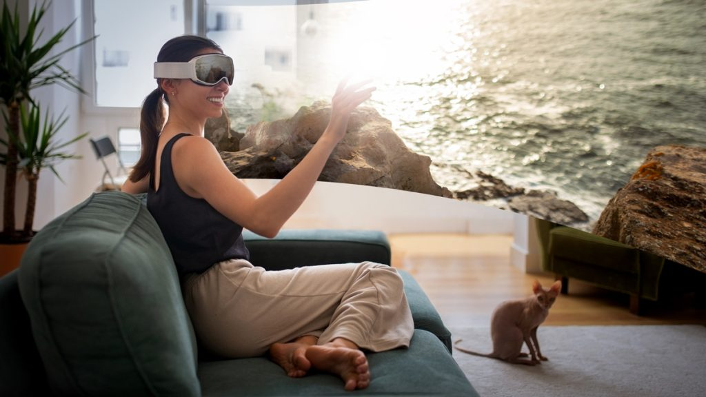
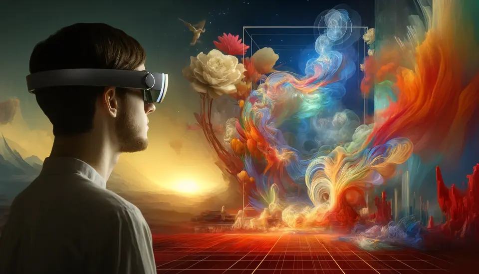
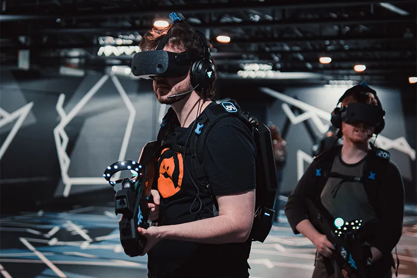

Three readings this week made me think differently about how we look at things and how things look back at us. It also made me realize that my VR project sits right in the middle of that challenge.

Dream Farm Agency. (2024). [Online image]. Available at: https://dreamfarmagency.com/blog/what-is-an-immersive-experience/ (Accessed: 25 February 2025)
Virilio mentioned in The Vision Machine that we are becoming increasingly dependent on technology to “see for us.” Things like drones and cameras record images without us even noticing, and he calls this “automated vision.” At first, I thought this was a cold and impersonal future. But upon further reflection, the “automatic perspective” function I set up in my VR project is actually somewhat similar to this mechanism. When users enter the VR environment, I have pre-set their first-person perspective, how they can move their field of vision, and which points they need to click to trigger the next event. These things may seem like an “immersive experience,” but in fact, I’m “choreographing what they see with their eyes.”

Capsule Sight. (2024). [Online image]. Available at: https://capsulesight.com/vrglasses/the-future-of-digital-art-in-virtual-reality-vr-through-sora/ (Accessed: 25 February 2025)
Benjamin’s article is quite old, yet it remains highly relevant to the contemporary era. He stated that when art can be mass-produced and replicated, it loses its unique “presence.” This statement immediately reminded me of my work on the 3D modeling of Winchester Cathedral. I am going to replicating a historical site, and users could enter and view it countless times, and even change the perspective, zoom in or out. But is this still “Winchester Cathedral”? Or is it just a visual representation of it? I think that although VR involves replication, it may also be able to create a new kind of “digital aura (The unique atmosphere and presence that an art piece has)”—for example, I could incorporate details or sounds that can only be experienced within the VR environment, giving it a new sense of “liveness.”

Znanye. (n.d.). [Online image]. Available at: https://www.znanye.com/blogs/how-to-approach-handling-user-interaction-in-a-vr-environment/(Accessed: 25 February 2025)
Farman’s perspective is particularly straightforward and practical. He said that the most valuable aspect of technology is not to enable people to lie on the sofa and move their fingers, but to make them “get moving and engaged” again. This made me realize that my VR project shouldn’t just be a tool for “viewing the scenery,” but rather it should get the users “active.” For instance, they have to walk to a certain point to trigger the sound of the organ, or manually light up the timeline of a historical event. This kind of interaction not only makes them feel more involved, but also endows the space with “stories.”
Overall, this week’s readings have shown me that vision is not a process of passive reception, but rather an orchestrated experience. As a student of creative computing, I not only need to design the visuals, but also think about questions like “How do I make the users move? How do they look at things? What attracts them? What do they overlook?” And all these factors directly influence whether my VR project can truly immerse people in history.
Reading list
- Virilio, P. (1994). The Vision Machine, Chapter 1
- Benjamin, W. (1936). The Work of Art in the Age of Mechanical Reproduction
- Farman, J. (2012). Mobile Interface Theory, Chapter 1: Embodiment and Locative Media